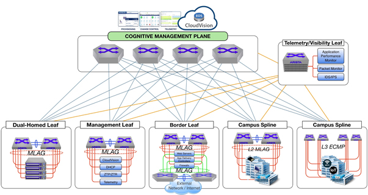

Arista Networks Internship Projects
-
CloudVision Dashboard Automation:
Wrote Python scripts to manage and display device tags and visualize real-time connections within Arista’s CloudVision Studio.
-
Spine-and-Leaf Network Generation:
Developed a Mako + Python script to construct spine-and-leaf topologies, simplifying deployment in CloudBuilder and CloudVision Studio.
-
PyAVD Configuration:
Customized Arista’s PyAVD Python package to be compatible with CloudVision Studio for configuration automation.
-
Git-Based Configuration Management:
Used Git to manage configurations and create pull requests across Arista’s internal infrastructure.
-
Certification Guide Creation:
Created a comprehensive study plan to help interns prepare for Arista ACE: L1 Certification.

